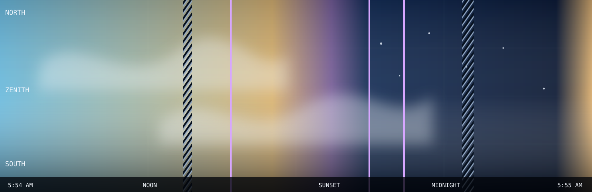

Full sky day / Generated view
24-hour keogram
Time runs left to right; each vertical slice preserves the selected north-zenith-south sky path.
Selected sky day / July 21
North → zenith → south

Full sky day / Generated view
Time runs left to right; each vertical slice preserves the selected north-zenith-south sky path.
Selected sky day / July 21
